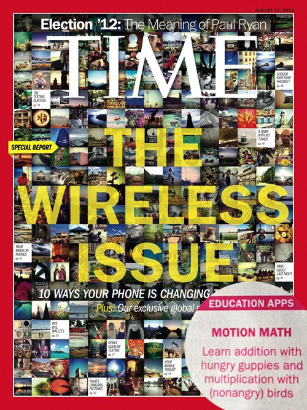
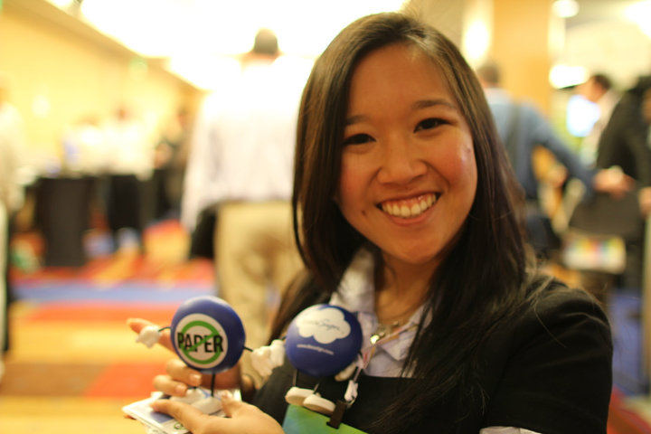

Welcome to An Bui's Web Portfolio.
I work with global brands and venture-backed startups to help them develop actionable plans for building their internal and customer communities. From leading the implementation and execution of online brand and reputation management campaigns for Fortune and Global 500 companies to product launches for startups, I take a data-driven approach to marketing communications.
Social Media & Web Analytics
- Led the identification and characterization of relevant social media influencers and online communities for Fortune 500 companies in the telecom, computer hardware technology, cloud computing, and web services industries.
- Led the content, paid ads, and conversion optimization efforts for Visible Technologies and Motion Math. Established and scaled DocuSign's social media efforts, impacting marketing, customer success and sales.
- Assessed and recommended social media monitoring, analytics, publishing and distribution tools to SutherlandGold's account teams and clients in alignment with business case and strategy.
Product Marketing
- Developed compelling, simple stories around new products, features, and packaging for positioning across channels.
- Created and executed market positioning of Motion Math’s mobile products, including Motion Math: Wings, Motion Math: Hungry Guppy and Motion Math PRO Suite.
- Iterated product messaging based on user testing, analytics and feedback.
- Integrated product messaging into marketing mediums including press releases, blogs, presentations, social media, email campaigns and more.
- Casted + co-produced a promotional video for Motion Math: Hungry Guppy:
Media Representative and Spokesperson
- Served as expert reference for electronic signatures and paperless business practices, with a guest appearance in RETech Radio. Served as an educational children’s game expert, with speaking appearances and online live chats.
- Represented customer and business interests at events and conferences such as Salesforce Dreamforce, National Association of Realtors Midyear Legislative Meetings and more.
- Fielded and responded to media inquiries from technical and business outlets.
- Trusted resource for reporters with more than 3 years of media relations experience representing employers and clients including DocuSign and Motion Math.
Public Relations Leadership
- Secured feature articles and effective positioning in major technology and national news outlets, including TechCrunch, MSNBC, New York Times, Wired, Time Magazine, The Unofficial Apple Weblog, and PBS News Hour.
- Hired, managed and scaled internal and external PR teams and agencies.
- Executed media relations campaigns and strategies for everything from launching startups (Motion Math, DocuSign) to established public companies (Velti).

Content, Support and Experience
- Provided customer support to Motion Math and DocuSign’s customer bases via email, phone, forums, social media and live assistance.
- Created and ran Motion Math’s advisory board and beta testing program to shape product strategy, user experience and roadmap.
- Gathered technical requirements, feature requests and bug reports from Motion Math’s parent community.
- Created strategy and content for customer and media relations including feature announcements, parent programs and success stories.
Events Strategy and Execution

- Co-founded STEM, weekly meetups for women in technology. Grew the STEM community to 80+ active participants in 2 months.
- Marketed and facilitated technical events including a DocuSign Hackathon and community events including Play Math, Motion Math's user testing program.
- Secured speaking engagements through social media programs for Motion Math and DocuSign.
Partner Marketing
- Led partner marketing efforts for Motion Math, securing a partnership with Children’s Creativity Museum.
- Worked with partners on an ongoing basis to gather, understand and prioritize strategic requirements.
- Led co-marketing efforts including events, content and social media engagement for Motion Math and DocuSign.
Social Media Consulting
- Consulted enterprise, Fortune 500, and startup customers on social media marketing and analytics strategy.
- Worked with enterprises to conduct social media research and marketing program design with target demographics.
- Helped companies develop social media engagement and activation programs and customer community programs in addition to long-tail strategy.
Before attending graduate school at The University of Pennsylvania and Tulane University, I received my BA in Sociology/Anthropology with honors, from Swarthmore College.
Now, I serve on the board of Disaster Accountability Project and love how technology connects people, brands, and real world for information sharing and collaboration.